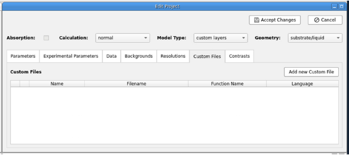
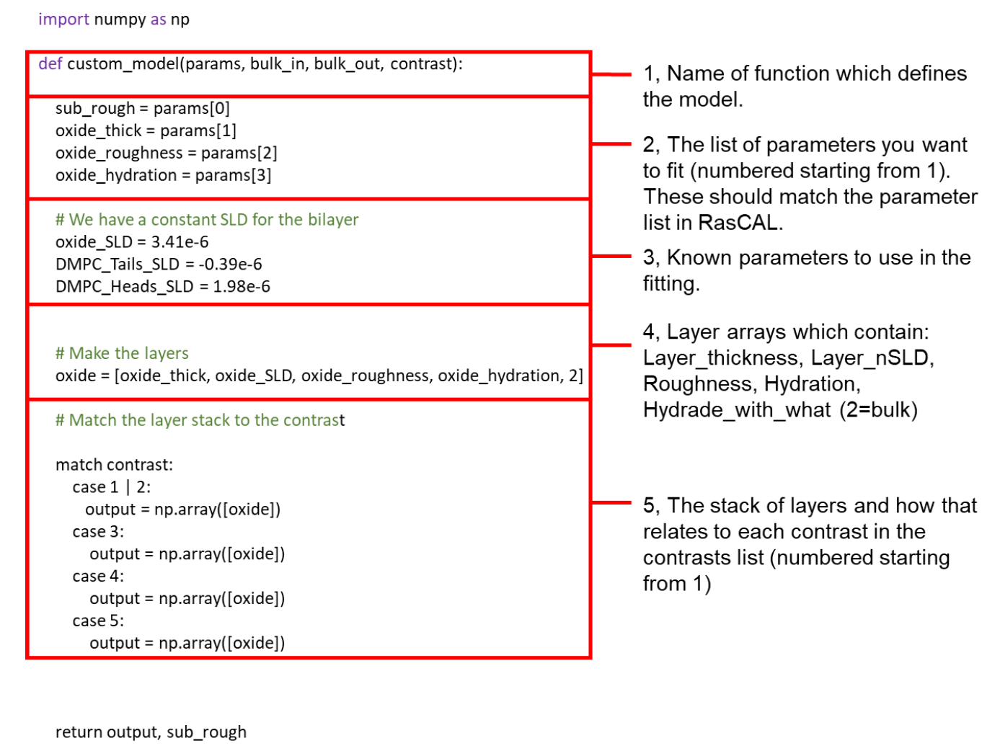
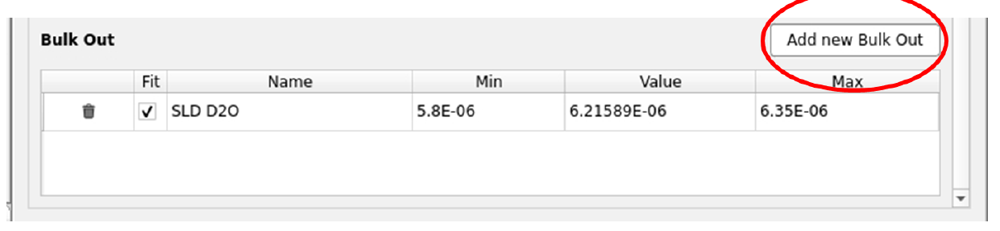
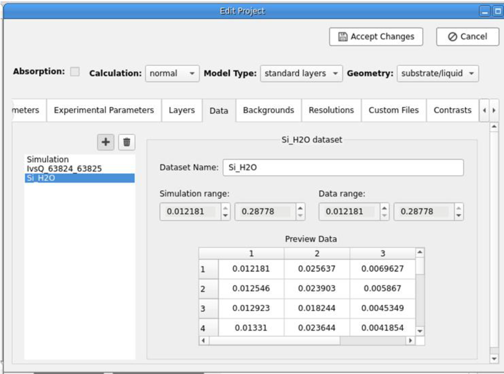
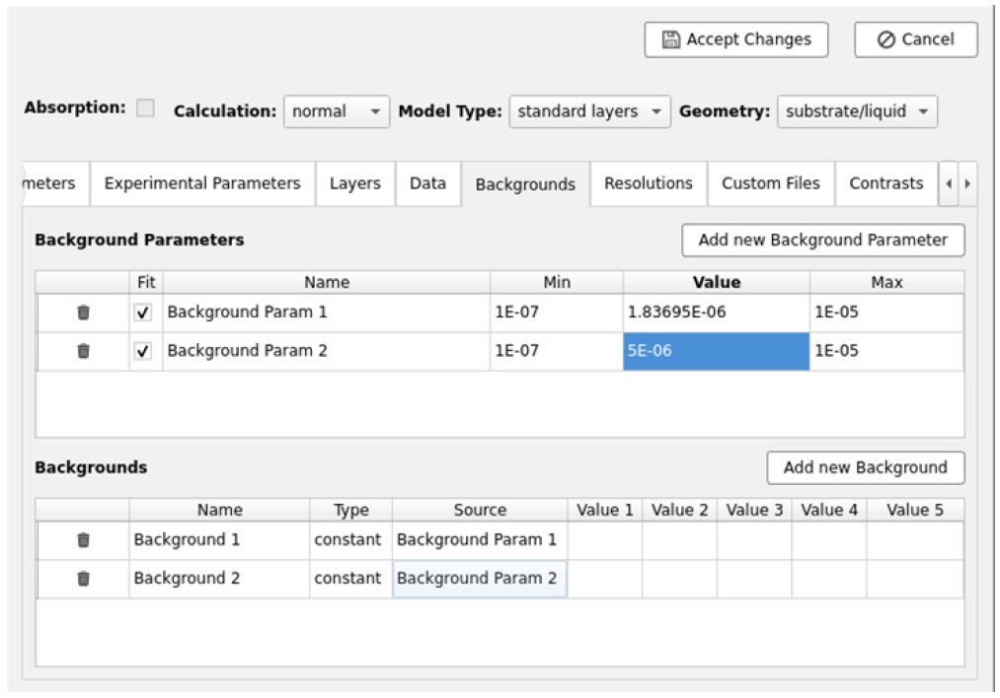
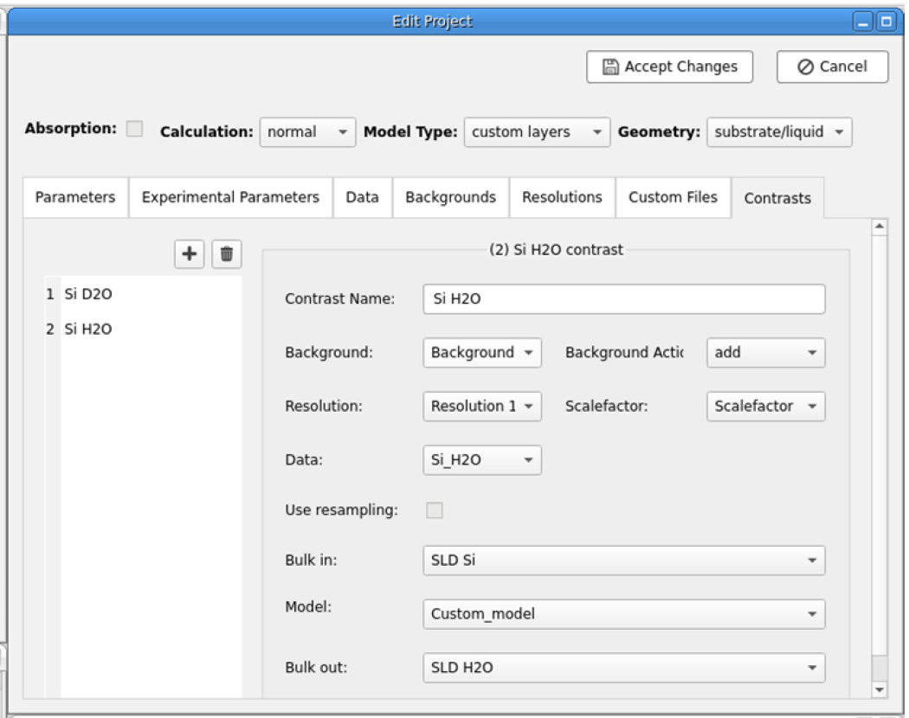
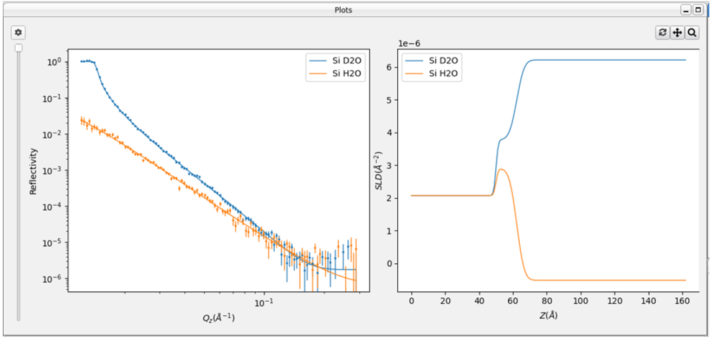

Using RasCals GUI is an easy way to begin fitting NR data but the real flexibility in the software comes from using the
custom model approach where the fit is defined using a script (i.e. a short piece of code).
Note
This tutorial uses the RasCAL-2 project saved at the end of the
Silicon-Water Interface tutorial.
We will start our journey into scripted modelling by fitting a predefined Custom model of the Silicon-D2O interface we
have already fitted.
Edit the project and delete the parameter for the SiO2 SLD from the parameters table.
On the Model Type: change from standard layers to custom layers.
You will note a new tab in the model called Custom Files has appeared. Navigate to this tab.

Click on Add new Custom File. A new entry will be added to the Custom File table. Change the
filename of that entry by double clicking on the cell, then navigate to the RasCal 2 Practical Student/DMPC data named/Custom models
folder and select the python script called custom_model.py.
Change the entry name in the Custom Files list to Custom_model.
Click on Edit File.
A script editor window will appear showing you the code which makes up the custom model. The script is a sequential
description of individual parameters, how these parameters relate to the interfacial layers and how those layers are
structured between the bulk phases. The simple script for the silicon water interface is given below with an
explanation of its structure:

Click Save on the script editor and go back into RasCAL.
On the Contrasts Tab select your only contrast (Si D2O) and for the Model, select Custom_model.
In the Parameters Tab, delete the parameters which do not appear in the model script.
Click Accept Changes in the project window.
Refit the data. You will note that the fit should be fairly identical to what we have found previously.
We will now add an additional contrast to enable a more precise resolution of the surface structure.
Click Edit Project: in the Experimental Parameters Tab, navigate to the bottom and click
Add new Bulk Out.

Name this new solvent SLD H2O and set a Min value to -0.6e-6, a Value to -0.56e-6 and
a Max to -0.4e-6.
Click on the Data tab and add (+) an additional data set. In the file dialog, navigate to the
RasCal 2 Practical Student/DMPC data named folder and select the data set “Si_H2O.dat” and select open.

Now navigate to the Contrasts tab and add a new contrast (+).
Name that contrast Si H2O. You will now need to select the experimental parameters for this background. The
incoherent scattering of H2O is significant higher than that of D2O due to the high incoherent scattering length
of protium compared to deuterium. Therefore we expect the background in H2O to be higher than in D2O and therefore
need a dedicated parameter for this for the H2O contrast.
Go to the Backgrounds tab. Add a new Background Parameter called Background Param 2 then Add a new
Background called Background 2, select Background Param 2 as the Source for this.

Go back to the Contrasts Tab and select the experimental parameters for the Si H2O contrast.
Hint
These will be the same as for the Si D2O contrast except the Data and the Background.

Set the Bulk in to be SLD Si and the Bulk out to be the SLD of H2O. The model is the custom model as
with the Si D2O contrast, then Accept changes to the project.
You should now see two contrasts in Plots windows, D2O and H2O solution contrasts, constrained to have the same
structure across the Si/Solution interface. Run a fit to see if how the constraint of a second contrast changes
in the fitted parameters:

You have now set up a custom model and simultaneously fitted multiple reflectivity data sets under differing solution
isotopic contrasts to accurately resolve an interfacial structure.
Save the project to another folder File > Save To Folder so it can be used in the next section.